| Mes | Periodo | Nacional | Urbano | Rural |
|---|---|---|---|---|
| Noviembre 2022 | cie202301 | 3.80 | 4.72 | 1.95 |
| Diciembre 2022 | cie202301 | 3.19 | 4.20 | 1.29 |
| Enero 2023 | cie202303 | 3.75 | 4.95 | 1.48 |
| Febrero 2023 | cie202303 | 3.86 | 5.17 | 1.34 |
| Marzo 2023 | cie202304 | 3.63 | 4.86 | 1.29 |
| Abril 2023 | cie202305 | 4.02 | 5.36 | 1.44 |
| Mayo 2023 | cie202306 | 3.20 | 4.10 | 1.48 |
| Junio 2023 | cie202308 | 3.83 | 5.00 | 1.57 |
| Julio 2023 | cie202308 | 3.71 | 4.95 | 1.30 |
| Agosto 2023 | cie202309 | 3.48 | 4.54 | 1.44 |
| Septiembre 2023 | cie202310 | 3.68 | 4.79 | 1.61 |
| Octubre 2023 | cie202312 | 3.56 | 4.58 | 1.62 |
| Noviembre 2023 | cie202312 | 3.46 | 4.77 | 0.96 |
| Diciembre 2023 | cie202402 | 3.38 | 4.44 | 1.38 |
| Enero 2024 | cie202402 | 3.92 | 5.39 | 1.27 |
| Febrero 2024 | cie202404 | 4.24 | 5.51 | 1.86 |
| Marzo 2024 | cie202404 | 3.76 | 5.19 | 1.04 |
| Abril 2024 | cie202405 | 3.39 | 4.49 | 1.33 |
| Mayo 2024 | cie202406 | 3.55 | 4.63 | 1.45 |
| Junio 2024 | cie202407 | 3.14 | 4.14 | 1.28 |
| Julio 2024 | cie202408 | 3.72 | 4.86 | 1.52 |
| Agosto 2024 | cie202409 | 4.00 | 5.33 | 1.47 |
| Septiembre 2024 | cie202410 | 3.69 | 4.94 | 1.33 |
| Octubre 2024 | cie202411 | 3.54 | 4.70 | 1.26 |
| Noviembre 2024 | cie202412 | 3.73 | 5.07 | 1.27 |
| Diciembre 2024 | cie202501 | 2.69 | 3.61 | 1.03 |
| Enero 2025 | cie202502 | 3.82 | 5.07 | 1.62 |
| Febrero 2025 | cie202503 | 3.82 | 5.07 | 1.62 |
| Marzo 2025 | cie202505 | 3.31 | 4.25 | 1.59 |
| Abril 2025 | cie202505 | 3.64 | 4.67 | 1.65 |
| Mayo 2025 | cie202506 | 4.10 | 5.20 | 1.80 |
| Junio 2025 | cie202507 | 3.50 | 4.50 | 1.60 |
| Julio 2025 | cie202509 | 3.28 | 4.23 | 1.38 |
| Agosto 2025 | cie202509 | 3.58 | 4.86 | 1.14 |
| Septiembre 2025 | cie202510 | 3.19 | 4.07 | 1.53 |
Tasa de desempleo ecuatoriana Noviembre 2022 - Septiembre 2025
1. Descarga de informes mensuales del BCE, compilación y limpieza de los datos
En esta sección se presentan los datos obtenidos de los informes del Banco Central del Ecuador, disponibles en su portal en formato PDF. El propósito de este reporte automatizado es descargar dichos informes, almacenarlos para futuras consultas, extraer la tasa de desempleo, depurar la información y procesarla de manera sistemática. El cuadro mostrado constituye la evidencia del cumplimiento de cada uno de estos pasos.
Para referencia, uno de los informes del BCE puede descargarse en el siguiente enlace: Informe BCE – Cifras Económicas, octubre 2025
El código utilizado para la elaboración de este reporte y el análisis de los datos se encuentra disponible en GitHub: Repositorio Tasa de desempleo
2. Gráfica de la tasa de desempleo ecuatoriano para el período noviembre 2022 a septiembre 2025
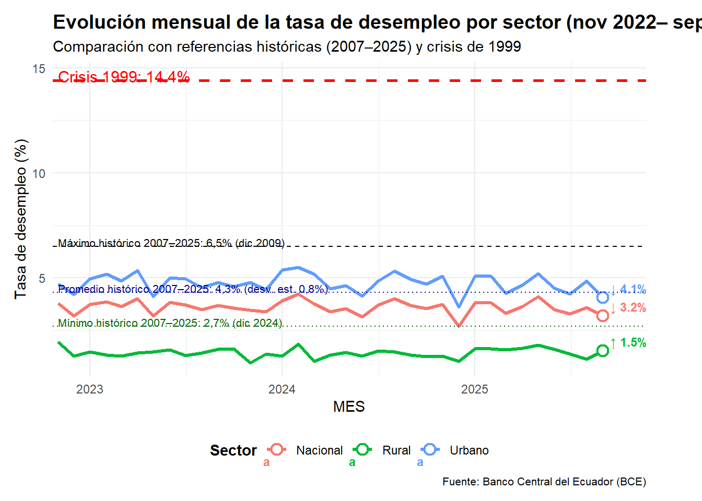
En el presente gráfico podemos observar que septiembre 2025 revela un comportamiento mixto en los sectores:
La tasa nacional descendió a 3.2%, consolidando una tendencia de mejora respecto a meses anteriores.
La tasa urbana también disminuyó, ubicándose en 4.1%, lo que sugiere una recuperación parcial del empleo formal.
En contraste, la tasa rural se incrementó levemente a 1.5%, posiblemente reflejando ajustes estacionales o fricciones en el empleo agrícola.
Con respecto a la comparación con referentes históricos:
| Referente histórico | Valor (%) | Observación |
|---|---|---|
| Crisis 1999 | 14.4 | Muy por encima del nivel actual; no hay señales de crisis |
| Máximo histórico | 6.5 (dic. 2009) | No se ha superado en ningún sector |
| Promedio histórico | 4.3 (2007–2025) | La tasa nacional está por debajo, lo que indica estabilidad |
| Mínimo histórico | 2.7 (dic. 2024) | La tasa nacional se mantiene cerca |
La tasa nacional actual (3.2%) se ubica por debajo del promedio histórico, lo que sugiere que no existe deterioro estructural ni coyuntural. Este nivel es consistente con una economía que opera dentro de márgenes saludables de fricción laboral.
Desde la teoría económica, el desempleo puede analizarse como una variable que refleja tanto ciclos económicos como estructuras de mercado laboral. Según John Maynard Keynes, el desempleo puede persistir incluso en equilibrio si la demanda agregada es insuficiente, lo que justifica la intervención estatal para estimular el empleo.
En este caso, los niveles actuales no sugieren insuficiencia de demanda, sino una estabilidad estructural, donde las tasas se mantienen dentro de rangos esperables y no se observan presiones críticas.
Si bien existen otras variables dentro del campo macroeconómico y social con las que realizar comparaciones con el desempleo como por ejemplo: PIB (Ley de Okun) , Inflación (Curva de Phillips), Subempleo, pobreza, migración, criminalidad, el propósito de este análisis es univariado, centrado exclusivamente en el comportamiento de la tasa de desempleo a lo largo del tiempo. Esto permite una lectura clara y directa de la evolución laboral sin introducir complejidades multivariadas que serán abordadas en futuros trabajos.
3. Gráfico de incrementos y decrementos de la tasa de desempleo ecuatoriano
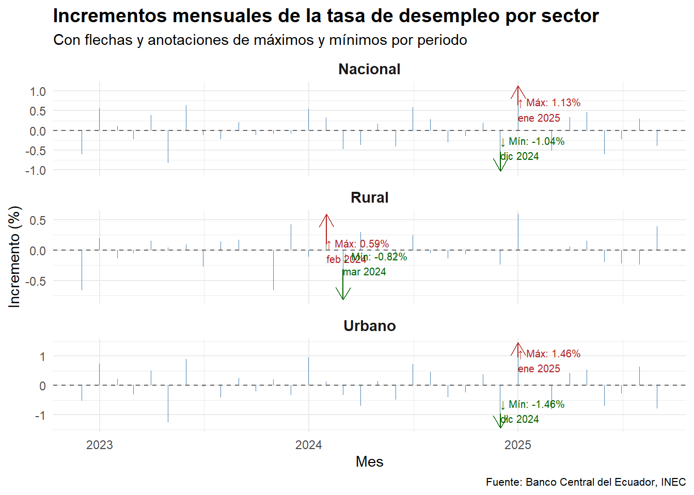
El gráfico presenta la evolución de los cambios mensuales en la tasa de desempleo para los sectores nacional, urbano y rural, permitiendo identificar los momentos de mayor variación en la dinámica laboral entre noviembre de 2023 y septiembre de 2025.
En el sector nacional, el mayor incremento se registró en enero de 2025, con un aumento de 1.13 puntos porcentuales, mientras que la mayor reducción ocurrió en diciembre de 2024, con una caída de 1.04 puntos. Este comportamiento refleja una fuerte oscilación en el cambio de año, posiblemente asociada a ajustes estacionales o administrativos.
En el sector rural, el incremento más alto fue de 0.59 puntos en febrero de 2024, seguido por una disminución significativa de 0.82 puntos en marzo del mismo año, lo que sugiere una dinámica agrícola o de ocupación informal con alta sensibilidad estacional.
En el sector urbano, se observa la mayor volatilidad: el incremento más pronunciado fue de 1.46 puntos en enero de 2025, y la reducción más fuerte también fue de 1.46 puntos en diciembre de 2024, lo que indica una reversión abrupta en la dinámica del empleo formal urbano.
Estos valores extremos permiten identificar meses críticos en la evolución del desempleo, donde se concentran los mayores ajustes. La simetría entre diciembre 2024 y enero 2025 en los sectores nacional y urbano sugiere un efecto de transición anual, posiblemente vinculado a:
Finalización y renovación de contratos públicos y privados.
Cambios en políticas de empleo o presupuestos institucionales.
Fricciones estacionales propias del mercado laboral ecuatoriano.
El comportamiento rural, en cambio, muestra picos más suaves y desplazados, lo que es consistente con una estructura laboral menos formal y más dependiente de ciclos agrícolas.
4. Componentes temporales de la tasa de desempleo ecuatoriano
A partir de este punto se trabaja con la tasa nacional.
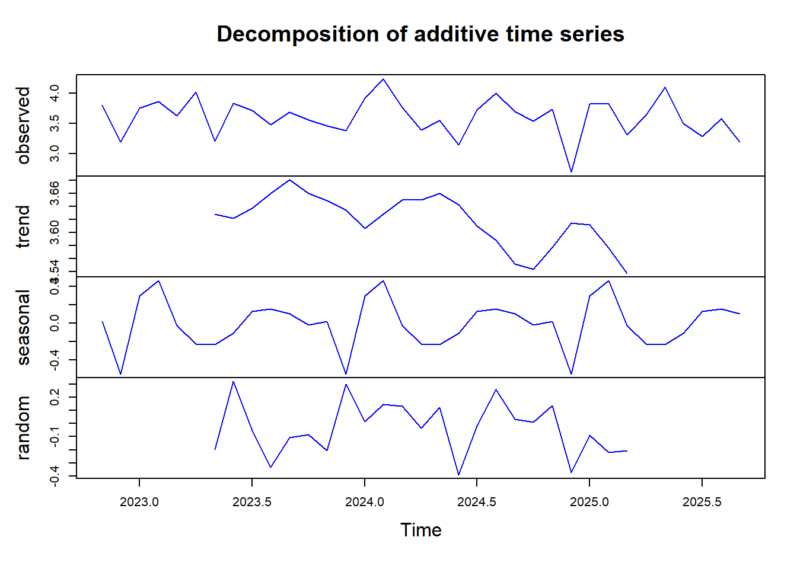
4.1 Tendencia de la tasa de desempleo
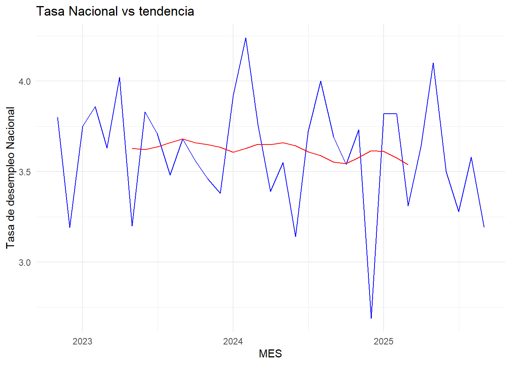
El gráfico muestra la evolución de la tasa de desempleo nacional junto con su tendencia suavizada. Se observa que los valores fluctúan alrededor de un nivel medio sin una dirección persistente al alza o a la baja. Este comportamiento sugiere que la serie no presenta una tendencia marcada y que su dinámica es compatible con una serie estacionaria, donde las variaciones se mantienen acotadas y centradas en torno a un promedio estable.
Para confirmar formalmente la estacionariedad, es apropiado aplicar pruebas como el test de Dickey-Fuller aumentado (ADF). Este contraste permite verificar si la serie contiene una raíz unitaria (indicativa de no estacionariedad) o si, por el contrario, las fluctuaciones se mantienen alrededor de un valor constante con varianza estable.
Hipótesis nula (H0): la serie tiene raíz unitaria → no es estacionaria.
Hipótesis alternativa (H1): la serie es estacionaria.
Augmented Dickey-Fuller Test
data: com$Nacional
Dickey-Fuller = -4.8413, Lag order = 3, p-value = 0.01
alternative hypothesis: stationaryEl test arrojó un valor p-value de 0.01 el cual es menor a 0,05 por lo que se rechaza la hipótesis nula, se concluye que la serie es estacionaria, lo que respalda la interpretación visual del gráfico.
La idea de estacionariedad es central en la econometría de series de tiempo. Como señalaba Clive Granger, premio Nobel de Economía, las series económicas suelen mostrar fluctuaciones alrededor de un equilibrio de largo plazo, y la estacionariedad es condición necesaria para aplicar modelos predictivos robustos como ARIMA.
4.2 Estacionalidad de la tasa de desempleo
[1] "2022-11-01" "2022-12-01" "2023-01-01" "2023-02-01" "2023-03-01"
[6] "2023-04-01"El gráfico de estacionalidad evidencia que los meses de febrero concentran los mayores picos de desempleo, mientras que en diciembre se registran los valores más bajos. Este patrón refleja un comportamiento recurrente en el mercado laboral ecuatoriano:
En diciembre, la tasa de desempleo disminuye debido al aumento de la demanda laboral asociada a las festividades de fin de año, caracterizadas por contrataciones temporales en comercio, servicios y actividades vinculadas al consumo estacional.
En febrero, una vez concluido el periodo festivo y finalizados muchos contratos temporales, el desempleo tiende a incrementarse, generando el pico estacional más alto del año.
Este comportamiento es consistente con la teoría de las fluctuaciones estacionales en series de tiempo económicas, donde ciertos meses concentran variaciones recurrentes por factores institucionales y sociales. La dinámica diciembre–febrero puede interpretarse como un ciclo de contratación y desvinculación temporal, propio de economías con alta informalidad y fuerte dependencia del comercio estacional.
Desde una perspectiva teórica, este patrón se relaciona con lo que Keynes denominaba la demanda efectiva: el empleo depende de la capacidad de la economía para sostener la demanda agregada. En diciembre, la demanda se expande por el consumo festivo; en febrero, se contrae, generando un ajuste en el empleo.
5. Modelamiento de la tasa de desempleo
5.1 Gráficos de autocorrelación (ACF) y autocorrelación Parcial (PACF)
El ACF y el PACF se utilizan para analizar la dependencia temporal de una serie respecto a sus valores rezagados. El ACF muestra la correlación global entre los valores actuales y los de periodos anteriores, mientras que el PACF refleja la correlación directa con un rezago específico, eliminando la influencia de los rezagos intermedios.
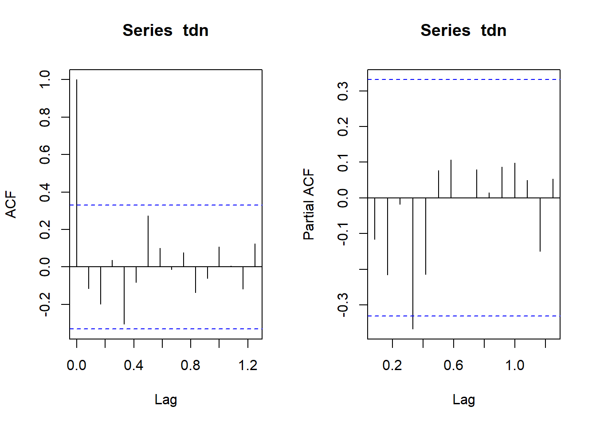
Los gráficos de Autocorrelación (ACF) y Autocorrelación Parcial (PACF) permiten identificar la dependencia temporal de la serie y orientar la selección de modelos ARIMA:
ACF: mide la correlación total entre los valores actuales y sus rezagos. En este caso, el rezago 1 es significativo, lo que indica la existencia de autocorrelación inmediata en la serie.
PACF: mide la correlación directa entre los valores presentes y un rezago específico, eliminando la influencia de rezagos intermedios. Se observa que el rezago 4 es significativo y negativo, lo que sugiere que valores altos de la tasa de desempleo hace cuatro periodos tienden a asociarse con valores más bajos en el presente (y viceversa). La diferencia clave respecto a la ACF es que la PACF cancela las influencias indirectas, mostrando únicamente la relación neta.
Dado que previamente se verificó la estacionariedad de la serie nacional, los resultados de la ACF y PACF orientan la construcción de modelos ARIMA:
Se consideran los modelos ARIMA(4,0,0) y ARIMA(4,0,1), que incorporan la autocorrelación de corto plazo y el efecto del rezago 4.
Se incluirá también un modelo Holt-Winters multiplicativo, adecuado para series con estacionalidad proporcional.
Finalmente, se probará el modelo Prophet, desarrollado por Meta, que utiliza descomposición aditiva con componentes de tendencia, estacionalidad y efectos de calendario (https://facebook.github.io/prophet/docs/quick_start.html#r-apil).
5.2 Modelos ARIMA vs Holt Winters (ETS) y Prophet
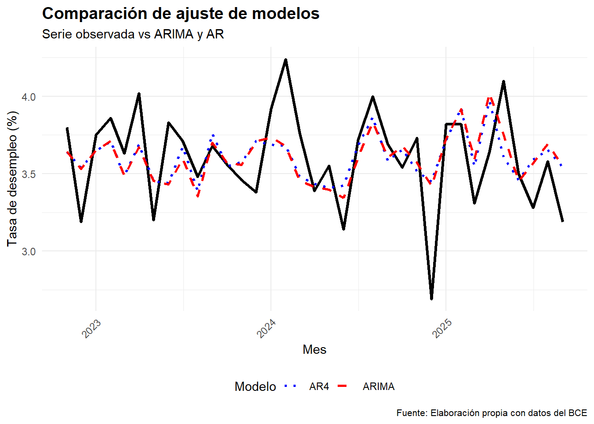
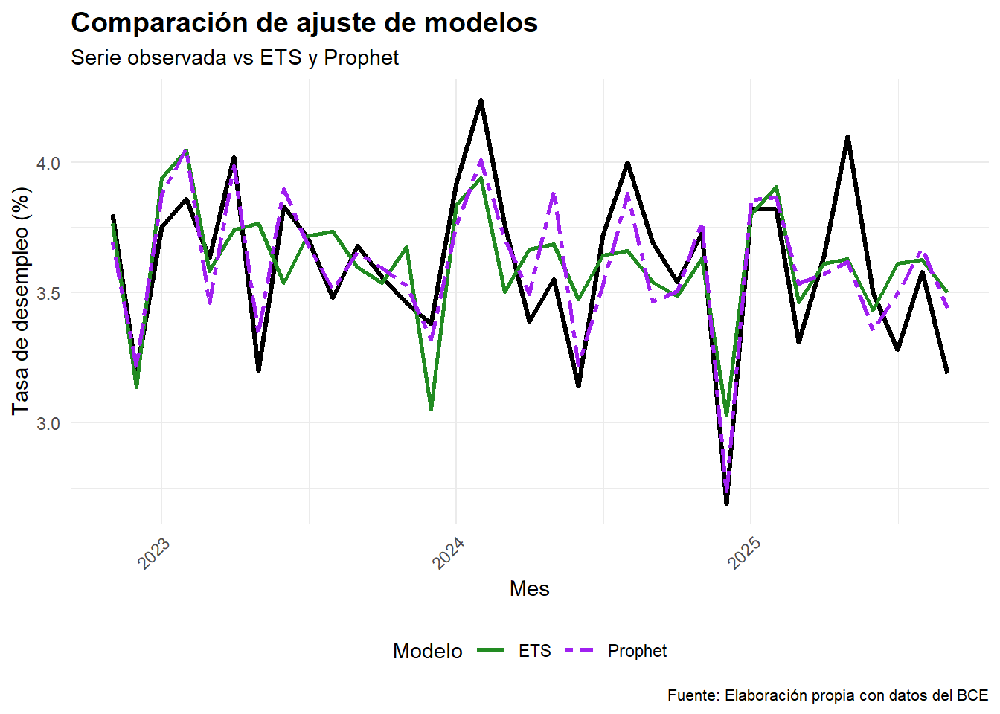
| Modelo | AIC | BIC | MAE | RMSE |
|---|---|---|---|---|
| ARIMA(4,0,1) | 20.80 | 31.69 | 0.2118 | 0.2622 |
| AR(4) | 20.37 | 29.70 | 0.2141 | 0.2690 |
| ETS(M,M,M) | NA | NA | 0.0520 | 0.0652 |
| Prophet | NA | NA | 0.1225 | 0.1589 |
Como se puede apreciar el modelo Holt Winters (ETS) tiene el mejor ajuste de la serie de tiempo ya que tiene el menor MAE y RMSE, lo que indica que sus errores son más pequeños y consistentes.
Cabe destacar que Prophet tiene buen desempeño, pero no supera a ETS.
6. Análisis de parámetros del modelo seleccionado (ETS)
| modelo_ets$par | |
|---|---|
| alpha | 0.0121259 |
| beta | 0.0121235 |
| gamma | 0.0001502 |
| l | 3.7157247 |
| b | 0.9986766 |
| s0 | 0.9742648 |
| s1 | 0.9891271 |
| s2 | 1.0230976 |
| s3 | 1.0164375 |
| s4 | 0.9660464 |
| s5 | 1.0232978 |
| s6 | 1.0165032 |
| s7 | 0.9720832 |
| s8 | 1.0942549 |
| s9 | 1.0637490 |
| s10 | 0.8462161 |
α (alpha): suavizamiento del nivel
β (beta): suavizamiento de la tendencia
γ (gamma): suavizamiento de la estacionalidad
l: Nivel inicial (intercepto)
b: Tendencia inicial (pendiente).
Los valores s0 a s10 indican el efecto estacional relativo de cada mes (noviembre a octubre)
α al ser un valor bajo indica que el modelo promedia los datos a lo largo de un período más prolongado, haciendo el pronóstico menos sensible a los cambios recientes.
β al ser un valor bajo considera a la tendencia constante.
γ indica una estacionalidad más estable y consistente a lo largo del tiempo.
I representa el valor base de la serie de tiempo en el momento de inicio (justo antes del primer período). Es el valor de partida para el componente de nivel del pronóstico.
b representa la pendiente de la serie en el momento de inicio. Indica la tasa de crecimiento o decrecimiento de la serie al principio del período de pronóstico.
Los valores de s0 a s10 se verán de mejor manera en el siguiente gráfico.
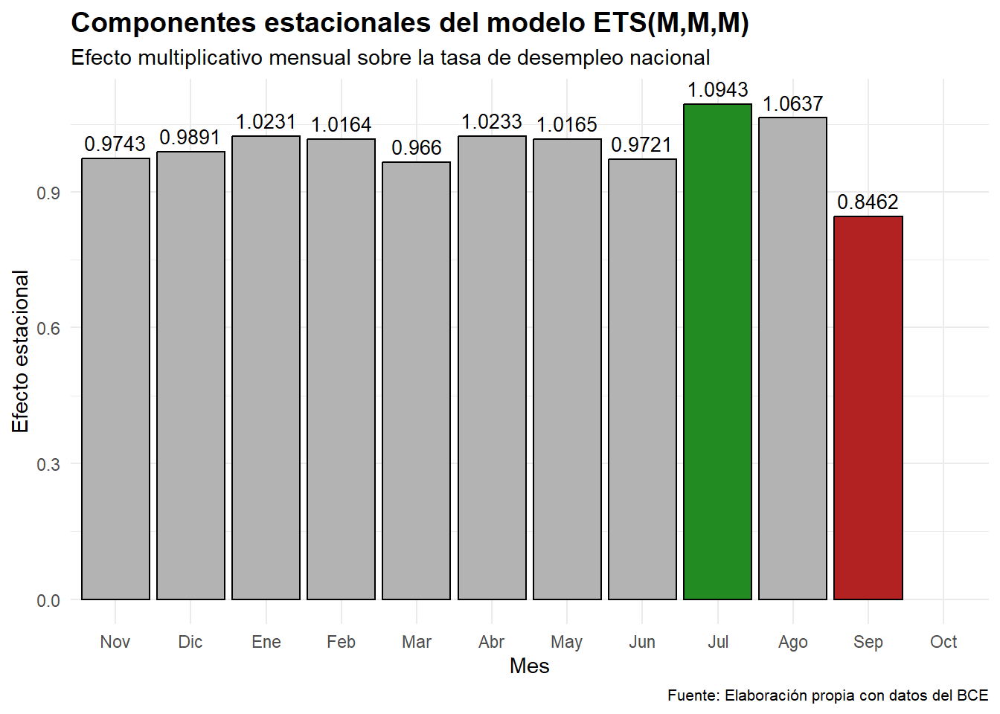
El modelo ETS es muy conservador en sus ajustes de nivel y tendencia (α y β muy bajos).
La estacionalidad es suave pero presente, con algunos meses claramente más altos o bajos.
El mes que presenta mayor peso en el modelo es s8 (julio)
El mes que presenta la menor ponderación en el modelo es s10 (septiembre)
El modelo está capturando patrones estables y cíclicos, indicando que los picos detectados no son necesariamente estructurales, sino parte del patrón cíclico, lo que se refleja en su buen desempeño en MAE y RMSE.
7. Validación del modelo (ETS)
7.1 Error absoluto medio (MAE)
Mide la magnitud promedio de los errores de predicción, el objetivo del MAE es comunicar el error promedio en unidades reales (como puntos porcentuales en este caso).
La media de los residuos de la tasa de desempleo es: 0.052 7.2 Error cuadrático medio (RMSE)
Se calcula como la raíz cuadrada de la media de las diferencias al cuadrado entre las predicciones y los valores observados. Un RMSE bajo indica que el modelo se ajusta mejor a los datos, mientras que un RMSE alto significa que las predicciones son menos precisas.
RMSE: 0.0652 7.3 Gráfico de los residuos del modelo
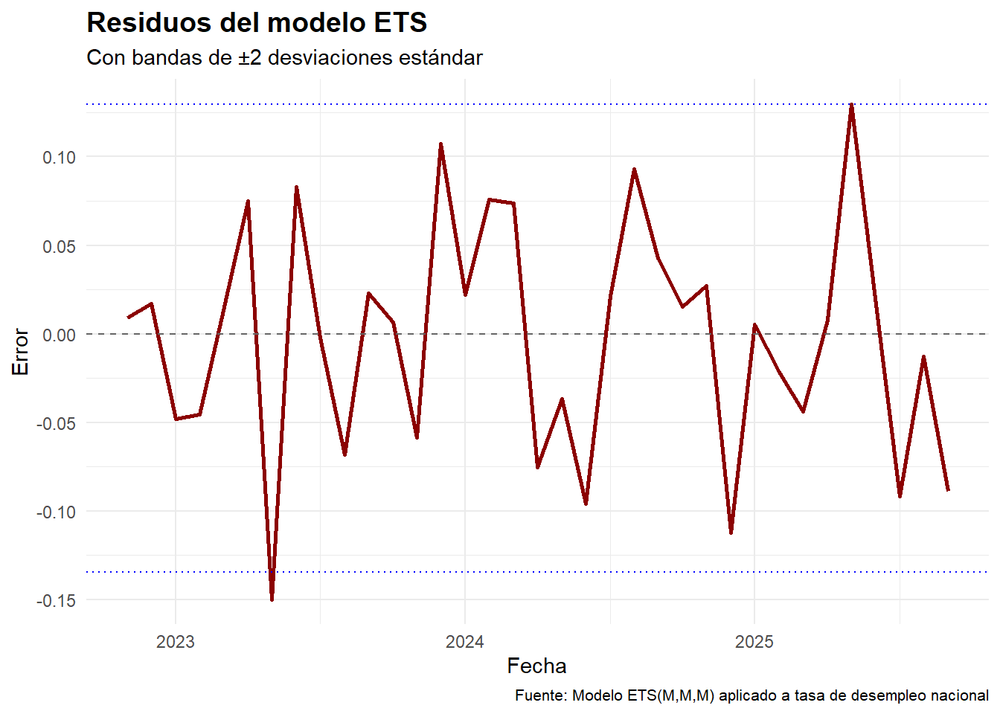
El gráfico de residuos muestra que:
Residuos centrados en cero: la mayoría de los errores se distribuyen alrededor de la línea base, lo que indica ausencia de sesgo sistemático en las proyecciones.
Bandas de ±2σ: casi todos los residuos se mantienen dentro de las bandas de confianza. Solo se observa un pico aislado en 2023 que supera este umbral.
Variabilidad moderada: no hay acumulación de picos ni patrones persistentes de desviación, lo que sugiere que el modelo captura adecuadamente la dinámica de la serie.
El pico en 2023 debe interpretarse como un evento atípico puntual (anomalía), más que como una falla estructural del modelo. En series económicas es normal que existan valores extremos asociados a shocks coyunturales.
La consistencia del resto de los residuos dentro de ±2σ confirma que el modelo mantiene un buen ajuste en la mayor parte del periodo.
7.4 ACF de los residuos del modelo
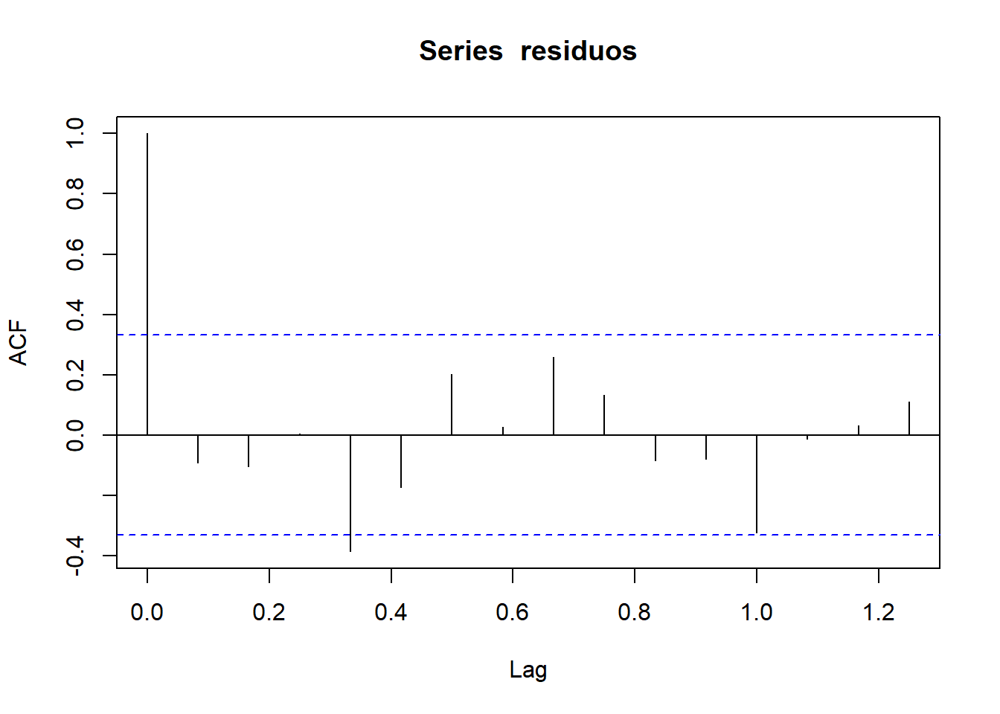
El análisis del gráfico de autocorrelación (ACF) de los residuos muestra que el lag 1 aparece significativo, lo cual es esperable dado que refleja la correlación inmediata de la serie consigo misma y no constituye evidencia de falla del modelo. Asimismo, se observa cierta significación en el lag 4, pero este comportamiento no invalida el modelo ETS(M,M,M), ya que, a diferencia de los modelos ARIMA, el ETS no incorpora explícitamente rezagos autorregresivos en su estructura. En consecuencia, la presencia de correlaciones en algunos rezagos es compatible con la lógica del ETS, que se centra en error, tendencia y estacionalidad multiplicativa, más que en la parametrización de dependencias temporales. Por ello, la autocorrelación observada en el lag 4 debe interpretarse como una señal débil y no como evidencia de un problema estructural en el ajuste del modelo.
7.5 Test de Box-Ljung
Este test evalúa si los residuos del modelo presentan autocorrelación significativa, es decir, si hay patrones temporales no capturados por el modelo.
- H₀ (nula): Los residuos son ruido blanco (no hay autocorrelación).
- H₁ (alternativa): Los residuos presentan autocorrelación.
Box-Ljung test
data: residuos
X-squared = 20.814, df = 12, p-value = 0.05317El p-value es de 0.05317 el cual es mayor a 0.05, por lo tanto no se rechaza la hipótesis nula, el modelo ETS está capturando bien la estructura de la serie.
7.6 Conclusiones de la validación del modelo
1. Residuos centrados en cero La mayoría de los residuos oscilan alrededor de la línea base, lo que indica que el modelo no presenta sesgo sistemático: no tiende a sobrestimar ni subestimar de forma persistente.
2. Residuos dentro de las bandas ±2σ Casi todos los puntos se encuentran dentro del rango esperado definido por ±2 desviaciones estándar. Se observa un único pico que supera este rango en 2023, coincidente con un evento atípico en el mercado laboral, lo que sugiere una anomalía puntual y no una falla estructural del modelo.
3. Variabilidad moderada Aunque existen fluctuaciones, no se identifican picos extremos ni patrones persistentes. Esto indica que el modelo captura adecuadamente la dinámica de la serie sin dejar errores sistemáticos relevantes.
4. Autocorrelación débil en los residuos El gráfico de ACF muestra que el lag 1 es significativo, lo cual es esperable porque refleja la correlación inmediata de la serie consigo misma. También se observa cierta significación en el lag 4, lo que sugiere una dependencia temporal débil. Sin embargo, el test de Box-Ljung arroja un p-value de 0.05317, lo que indica que no se rechaza la hipótesis nula de independencia de los residuos al nivel de significancia convencional (α = 0.05). En consecuencia, la autocorrelación detectada es leve y no compromete la validez del modelo ETS, que se centra en error, tendencia y estacionalidad multiplicativa, sin incorporar explícitamente rezagos autorregresivos como los modelos ARIMA.
5. Solidez del ajuste y validez para proyección El modelo ETS(M,M,M) muestra un ajuste robusto: los residuos son centrados, independientes y dentro de un rango esperable. No hay evidencia de errores sistemáticos ni de autocorrelación fuerte, lo que valida su uso para proyecciones confiables.
6. Indicadores de precisión Los valores de MAE y RMSE muestran diferencias promedio pequeñas entre los valores observados de la tasa nacional y sus respectivas proyecciones, lo que reafirma la calidad del ajuste.
8. Proyección de la tasa de desempleo
8.1 Gráfico de la tasa nacional de desempleo en conjunto con los valores proyectados y los intervalos de confianza
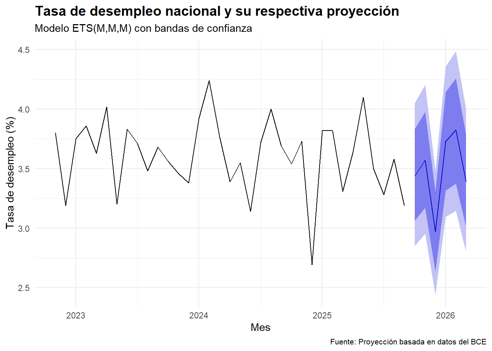
En el gráfico se puede observar la serie histórica de la tasa nacional de desempleo y la proyección obtenida con sus respectivos intervalos de confianza al 80 y 95 % de confianza, como se puede apreciar la proyección sigue el mismo patrón de de la serie.
8.2 Gráfico de los valores proyectados para 6 meses
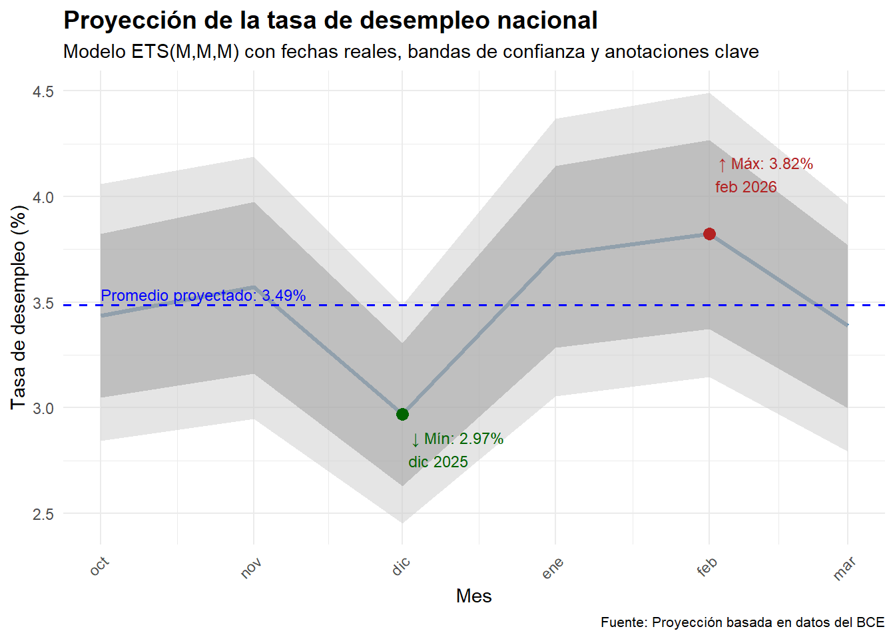
| Fecha | Proyeccion | IC_80_inf | IC_80_sup | IC_95_inf | IC_95_sup |
|---|---|---|---|---|---|
| 2025-10-01 | 3.44 | 3.05 | 3.82 | 2.85 | 4.03 |
| 2025-11-01 | 3.57 | 3.16 | 3.98 | 2.94 | 4.19 |
| 2025-12-01 | 2.97 | 2.63 | 3.31 | 2.47 | 3.49 |
| 2026-01-01 | 3.73 | 3.30 | 4.15 | 3.09 | 4.39 |
| 2026-02-01 | 3.82 | 3.39 | 4.26 | 3.19 | 4.47 |
| 2026-03-01 | 3.39 | 3.01 | 3.77 | 2.79 | 3.98 |
En esta sección se detalla los valores proyectados para el período octubre 2025 a marzo 2026 con sus respectivos intervalos al 80 y 95% de confianza.
El valor máximo proyectado corresponde a febrero de 2026, con una tasa de 3,82%, mientras que el mínimo se registra en diciembre de 2025, con 2,97%. La media del periodo proyectado se sitúa en 3,49%, con una desviación estándar de 0,30%, lo que refleja una variabilidad moderada en las estimaciones. Asimismo, se observa que las proyecciones se mantienen por debajo de los máximos y promedios históricos, siempre que las condiciones económicas permanezcan estables y no se introduzcan medidas de política gubernamental que puedan alterar la dinámica del mercado laboral. En caso de que se implementen nuevas políticas, el comportamiento de la serie y sus proyecciones podría modificarse significativamente.